Demo illustrating Circular Histogram Local Binary Pattern (chlbp)
File : chlbp
-------------
Circular Histogram Local Binary Pattern.
Return the Circular Histogram of Local Binary Patterns for image I.
Usage
------
H = chlbp(I , [options] );
Inputs
-------
I Input image (ny x nx x P) in UINT8 format.
options
N Number of sampling points (1 x nR) (default [N=8])
R Vector of Radius (1 x nR) (default [R=1]) ny>2max(R)+1 & nx>2max(R)+1
map Mapping of the chlbp (2^Nmax x nR) in double format (default map = (0 : 255))
shiftbox Shifting box parameters shiftbox (2 x 2 x nR) where [by , bx ; deltay , deltax] x nR (default shiftbox = [ny , nx ; 0 , 0])
by, bx denote the size of subwindows analysis, deltay, deltax represent the shift the subwindows analysis.Outputs
-------
H chlbp features (bin*nH x P) int UINT32 format where nH = nR*max(floor((ny - shiftbox(1,1,:))./shiftbox(2,1,:)) + 1 , 1)*max(floor((nx - shiftbox(1,2,:))./shiftbox(2,2,:)) + 1 , 1)
File : chlbp_gentleboost_binary_train_cascade ---------------------------------------------
Train Circular Histogram Local Binary Pattern with gentleboosting classifier for binary problem
Usage
------
param = chlbp_gentleboost_binary_train_cascade(X , y , [options] );
Inputs
-------
X Features matrix (d x N) in UINT32 format
y Binary labels (1 x N), y[i] = {-1 , 1} in INT8 format
options T Number of weak learners (default T = 100)
weaklearner Choice of the weak learner used in the training phase (default weaklearner = 0)
weaklearner = 0 <=> minimizing the weighted error : sum(w * |z - h(x;(th,a,b))|^2) / sum(w), where h(x;(th,a,b)) = (a*(x>th) + b) in R
weaklearner = 1 <=> minimizing the weighted error : sum(w * |z - h(x;(a,b))|^2), where h(x;(a,b)) = sigmoid(x ; a,b) in R
lambda Regularization parameter for the perceptron's weights'update (weaklearner = 1, default lambda = 1e-3)
max_ite Maximum number of iteration (default max_ite = 10)
epsi Sigmoid parameter (default epsi = 1)
premodel Classifier's premodels parameter up to n-1 stage (4 x Npremodels)(default premodel = [] for stage n=1)If compiled with the "OMP" compilation flag
num_threads Number of threads. If num_threads = -1, num_threads = number of core (default num_threads = -1)
Outputs
-------
param param output (4 x T) for current stage n of the classifier's premodel
featureIdx Feature indexes of the T best weaklearners (1 x T)
th Optimal Threshold parameters (1 x T)
a Affine parameter(1 x T)
b Bias parameter (1 x T)File : chlbp_gentleboost_binary_train_cascade
---------------------------------------------
Predict data label with a Strong Classifier trained with chlbp_gentleboost_binary_predict_cascade
Usage
------
[yest , fx] = chlbp_gentleboost_binary_predict_cascade(X , [options]);
Inputs
-------
X Features matrix (d x N) in INT32 format options
param Trained param structure (4 x T)
weaklearner Choice of the weak learner used in the training phase (default weaklearner = 0)
weaklearner = 0 <=> minimizing the weighted error : sum(w * |z - h(x;(th,a,b))|^2) / sum(w), where h(x;(th,a,b)) = (a*(x>th) + b) in R
weaklearner = 1 <=> minimizing the weighted error : sum(w * |z - h(x;(a,b))|^2), where h(x;(th,a)) = sigmoid(x ; a,b) in R
epsi Epsilon constant in the sigmoid function used in the perceptron (default epsi = 1)
cascade_type Type of cascade structure : 0 for coventional cascade, 1 for multi-exit cascade (default cascade_type = 0)
cascade Cascade parameters (2 x Ncascade) where cascade(1 , :) represents Entrance/Exit nodes. If cascade_type = 0, i.e. coventional cascade, Entrance nodes are [1 , cumsum(cascade(1 , 1:end-1))+1] and exit nodes are cumsum(cascade(1 , :))
If cascade_type = 1, i.e. multi-exit cascade, Entrance node is 1, exit nodes are cumsum(cascade(1 , :))
cascade(2 , :) reprensent thresholds for each segmentOutputs
-------
yest Estimated labels (1 x N) in INT8 format
fx Additive models (1 x N)
File : chlbp_adaboost_binary_train_cascade
---------------------------------------------
Train Circular Histogram Local Binary Pattern with adaboost classifier for binary problem
Usage
------
param = chlbp_adaboost_binary_train_cascade(X , y , [options]);
Inputs
-------
X Features matrix (d x N) in UINT32 format
y Binary labels (1 x N), y[i] = {-1 , 1} in INT8 format
options
T Number of weak learners (default T = 100) weaklearner Choice of the weak learner used in the training phase (default weaklearner = 2)
weaklearner = 2 <=> minimizing the weighted error : sum(w * |z - h(x;(th,a))|), where h(x;(th,a)) = a*sign(z - th) in [-1,1] for discrete adaboostpremodel Classifier's premodels parameter up to n-1 stage (4 x Npremodels)(default premodel = [] for stage n=1)
If compiled with the "OMP" compilation flag
num_threads Number of threads. If num_threads = -1, num_threads = number of core (default num_threads = -1)
Outputs
-------
param param output (4 x T) for current stage n of the classifier's premodel
featureIdx Feature indexes of the T best weaklearners (1 x T)
th Optimal Threshold parameters (1 x T)
a WeakLearner's weights (1 x T) in R (at = ct*pt, where pt = polarity)
b Zeros (1 x T), i.e. b = zeros(1 , T)File : chlbp_adaboost_binary_predict_cascade
---------------------------------------------
Predict data label with a Strong Classifier trained with chlbp_adaboost_binary_train_cascade
Usage
------
[yest , fx] = chlbp_adaboost_binary_predict_cascade(X , [options]);
Inputs
-------
X Features matrix (d x N) in INT32 format options
param Trained param structure (4 x T)
weaklearner Choice of the weak learner used in the training phase
weaklearner = 2 <=> minimizing the weighted error : sum(w * |z - h(x;(th,a))|), where h(x;(th,a)) = a*sign(z - th) in [-1,1] for discrete adaboost
cascade_type Type of cascade structure : 0 for coventional cascade, 1 for multi-exit cascade
cascade Cascade parameters (2 x Ncascade) where cascade(1 , :) represents Entrance/Exit nodes. If cascade_type = 0, i.e. coventional cascade, Entrance nodes are [1 , cumsum(cascade(1 , 1:end-1))+1] and exit nodes are cumsum(cascade(1 , :))
If cascade_type = 1, i.e. multi-exit cascade, Entrance node is 1, exit nodes are cumsum(cascade(1 , :))
cascade(2 , :) reprensent thresholds for each segmentOutputs -------
yest Estimated labels (1 x N) in INT8 format fx Additive models (1 x N)
Contents
- First example : compute Uniform CHLBP Features with N =8 neighbours and Radius R = 1 with a subwindows analysis of 64x64 shifted by 16x16
- Second example : compute CHLBP_{8;1}^u Features on Viola-Jones database
- Third example : compute CHLBP_{8;1}^u + CHLBP_{4;1} Features
- Fourth example : compute CHLBP_{8;1}^u + CHLBP_{4;1} Features + Adaboosting with T weaklearners (Decision Stump)
- Fifth example : compute CHLBP_{8;1}^u + CHLBP_{4;1} + CHLBP_{12;2}^u Features + Gentleboosting with T weaklearners (Decision Stump)
- Sith example : CHLBP_{8;1}^u versus CHLBP_{8;1} Features + Gentleboosting with T weaklearners (Decision Stump)
First example : compute Uniform CHLBP Features with N =8 neighbours and Radius R = 1 with a subwindows analysis of 64x64 shifted by 16x16
clear,close all,clc,drawnow P = 256; I = (imresize(imread('rice.png') , [P , P])); options.N = [8]; options.R = [1]; options.map = zeros(2^max(options.N) , length(options.N)); for i =1:length(options.N) mapping = getmapping(options.N(i),'u2'); options.map(: , i) = mapping.table'; end options.shiftbox = cat(3 , [P/4 , P/4 ; P/8 , P/8]); H = chlbp(I , options); plot(H) title(sprintf('Uniform CHLBP Histogram with N = %d, R = %d' , options.N , options.R)) % disp('Press key to continue') % pause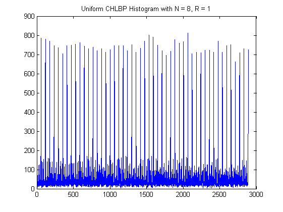
Second example : compute CHLBP_{8;1}^u Features on Viola-Jones database
clear load viola_24x24 Ny = 24; Nx = 24; options.N = 8; options.R = 1; mapping = getmapping(options.N,'u2'); options.map = mapping.table'; H = chlbp(X , options); imagesc(H) title(sprintf('Uniform CHLBP Histogram with N = %d, R = %d' , options.N , options.R)) % disp('Press key to continue') % pause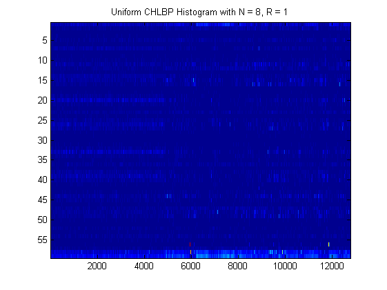
Third example : compute CHLBP_{8;1}^u + CHLBP_{4;1} Features
Ny = 19; Nx = 19; X = uint8(ceil(256*rand(Ny , Nx))); options.N = [8 , 4]; options.R = [1 , 1]; options.map = zeros(2^max(options.N) , length(options.N)); mapping = getmapping(options.N(1),'u2'); options.map(: , 1) = mapping.table'; options.map(1:2^options.N(2) , 2) = (0:2^options.N(2)-1)'; options.shiftbox = cat(3 , [Ny , Nx ; 0 , 0] , [10 , 10 ; 4 , 4]); H = chlbp(X , options); plot(H) title('CHLBP_{8;1}^u + CHLBP_{4;1} Histogram') % disp('Press key to continue') % pause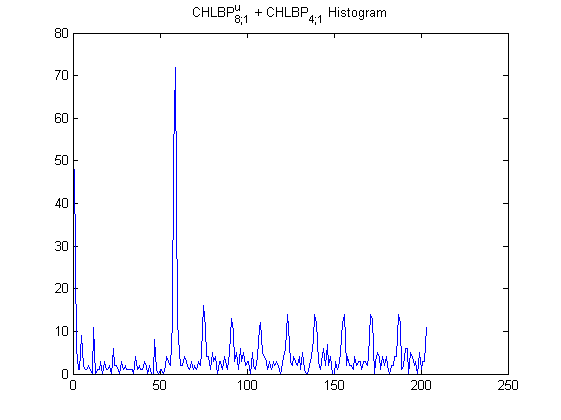
Fourth example : compute CHLBP_{8;1}^u + CHLBP_{4;1} Features + Adaboosting with T weaklearners (Decision Stump)
clear load viola_24x24 Ny = 24; Nx = 24; options.N = [8 , 4]; options.R = [1 , 1]; options.map = zeros(2^max(options.N) , length(options.N)); mapping = getmapping(options.N(1),'u2'); options.map(1:2^options.N(1) , 1) = mapping.table'; options.map(1:2^options.N(2) , 2) = (0:2^options.N(2)-1)'; shiftbox = cat(3 , [Ny , Nx ; 1 , 1] , [16 , 16 ; 4 , 4]); options.T = 50; H = chlbp(X , options); figure imagesc(H) title('CHLBP Features') drawnow y = int8(y); indp = find(y == 1); indn = find(y ==-1); index = randperm(length(y)); %shuffle data to avoid numerical discrepancies with long sequence of same label options.param = chlbp_adaboost_binary_train_cascade(H(: , index) , y(index) , options); [yest_train , fx_train] = chlbp_adaboost_binary_predict_cascade(H , options); tp_train = sum(yest_train(indp) == y(indp))/length(indp) fp_train = 1 - sum(yest_train(indn) == y(indn))/length(indn) Perf_train = sum(yest_train == y)/length(y) [tpp_train , fpp_train] = basicroc(y , fx_train); [dum , ind] = sort(y , 'descend'); figure plot(fx_train(ind)) title(sprintf('Output of the strong classifier for train data with T = %d' , options.T)) load jensen_24x24 y = int8(y); indp = find(y == 1); indn = find(y ==-1); H = chlbp(X , options); [yest_test , fx_test] = chlbp_adaboost_binary_predict_cascade(H , options); tp_test = sum(yest_test(indp) == y(indp))/length(indp) fp_test = 1 - sum(yest_test(indn) == y(indn))/length(indn) Perf_test = sum(yest_test == y)/length(y) [dum , ind] = sort(y , 'descend'); figure plot(fx_test(ind)) title(sprintf('Output of the strong classifier for test data with T = %d' , options.T)) [tpp_test , fpp_test] = basicroc(y , fx_test); figure plot(fpp_train , tpp_train , fpp_test , tpp_test , 'r' , 'linewidth' , 2) axis([-0.02 , 1.02 , -0.02 , 1.02]) title(sprintf('ROC for CHLBP features with T = %d' , options.T)) legend('Train' , 'Test' , 'Location' , 'SouthEast') % disp('Press key to continue') % pause
tp_train =
0.8800
fp_train =
0.0921
Perf_train =
0.8972
tp_test =
0.8864
fp_test =
0.0935
Perf_test =
0.8998
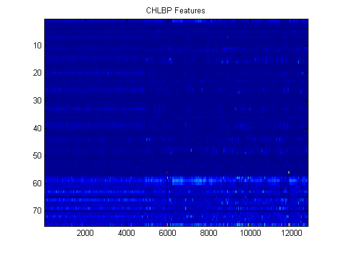 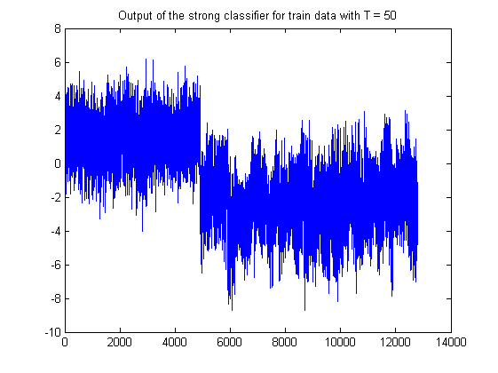 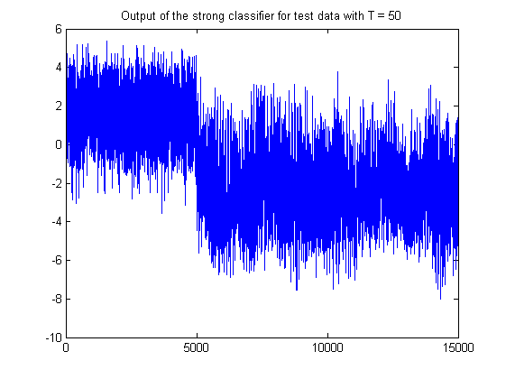 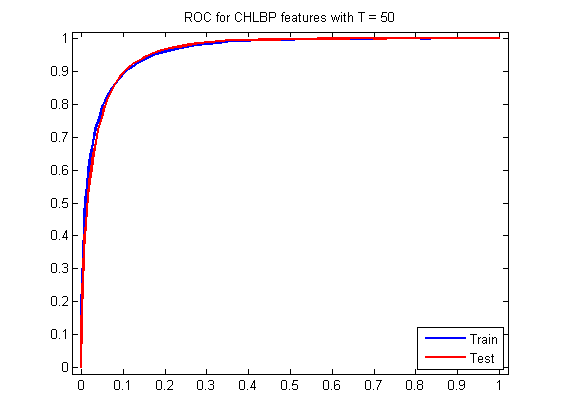 Fifth example : compute CHLBP_{8;1}^u + CHLBP_{4;1} + CHLBP_{12;2}^u Features + Gentleboosting with T weaklearners (Decision Stump)
clear load viola_24x24 Ny = 24; Nx = 24; options.N = [8 , 4 , 12]; options.R = [1 , 1 , 2]; options.map = zeros(2^max(options.N) , length(options.N)); mapping = getmapping(options.N(1),'u2'); options.map(1:2^options.N(1) , 1) = mapping.table'; options.map(1:2^options.N(2) , 2) = (0:2^options.N(2)-1)'; mapping = getmapping(options.N(3),'u2'); options.map(1:2^options.N(3) , 3) = mapping.table'; options.shiftbox = cat(3 , [Ny , Nx ; 1 , 1] , [16 , 16 ; 4 , 4] , [Ny , Nx ; 1 , 1]); options.T = 50; H = chlbp(X , options); figure imagesc(H) title('CHLBP Features') drawnow y = int8(y); indp = find(y == 1); indn = find(y ==-1); index = randperm(length(y)); %shuffle data to avoid numerical discrepancies with long sequence of same label options.param = chlbp_gentleboost_binary_train_cascade(H(: , index) , y(index) , options); [yest_train , fx_train] = chlbp_gentleboost_binary_predict_cascade(H , options); tp_train = sum(yest_train(indp) == y(indp))/length(indp) fp_train = 1 - sum(yest_train(indn) == y(indn))/length(indn) Perf_train = sum(yest_train == y)/length(y) [dum , ind] = sort(y , 'descend'); figure plot(fx_train(ind)) title(sprintf('Output of the strong classifier for train data with T = %d' , options.T)) [tpp_train , fpp_train] = basicroc(y , fx_train); load jensen_24x24 y = int8(y); indp = find(y == 1); indn = find(y ==-1); H = chlbp(X , options); [yest_test , fx_test] = chlbp_gentleboost_binary_predict_cascade(H , options); tp_test = sum(yest_test(indp) == y(indp))/length(indp) fp_test = 1 - sum(yest_test(indn) == y(indn))/length(indn) Perf_test = sum(yest_test == y)/length(y) [dum , ind] = sort(y , 'descend'); figure plot(fx_test(ind)) title(sprintf('Output of the strong classifier for test data with T = %d' , options.T)) [tpp_test , fpp_test] = basicroc(y , fx_test); figure plot(fpp_train , tpp_train , fpp_test , tpp_test , 'r' , 'linewidth' , 2) axis([-0.02 , 1.02 , -0.02 , 1.02]) title(sprintf('ROC for CHLBP features with T = %d' , options.T)) legend('Train' , 'Test', 'Location' , 'SouthEast') % disp('Press key to continue') % pause
tp_train =
0.8552
fp_train =
0.0133
Perf_train =
0.9361
tp_test =
0.9118
fp_test =
0.0106
Perf_test =
0.9635
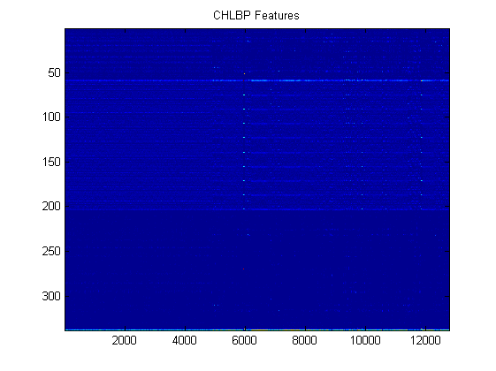 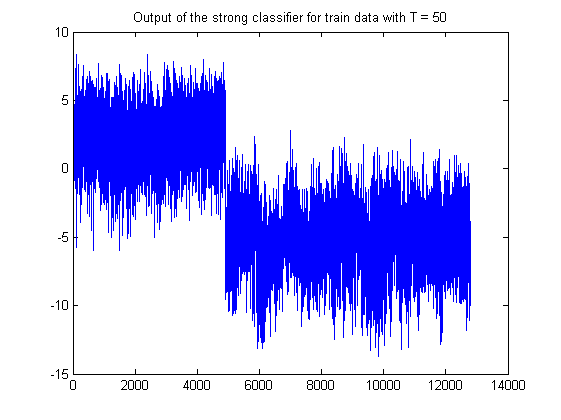 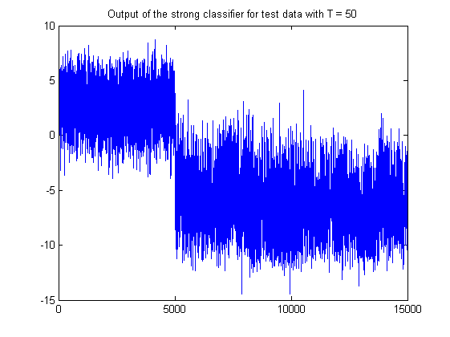 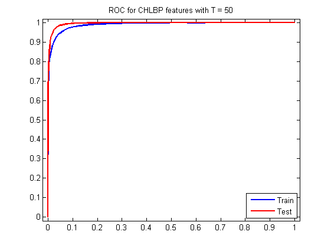 Sith example : CHLBP_{8;1}^u versus CHLBP_{8;1} Features + Gentleboosting with T weaklearners (Decision Stump)
clear load viola_24x24 y = int8(y); indp = find(y == 1); indn = find(y ==-1); Ny = 24; Nx = 24; options.N = 8; options.R = 1; options.map = zeros(2^max(options.N) , length(options.N)); options.T = 50; mapping = getmapping(options.N(1),'u2'); options.map = mapping.table'; H0 = chlbp(X , options); options.map = (0:2^options.N-1)'; H1 = chlbp(X , options); figure imagesc(H0) title(sprintf('Uniform CHLBP Features with N = %d, R = %2.1f' , options.N , options.R)) drawnow figure imagesc(H1) title(sprintf('CHLBP Features with N = %d, R = %2.1f' , options.N , options.R)) drawnow index = randperm(length(y)); %shuffle data to avoid numerical discrepancies with long sequence of same label options0.param = chlbp_gentleboost_binary_train_cascade(H0(: , index) , y(index) , options); [yest0_train , fx0_train] = chlbp_gentleboost_binary_predict_cascade(H0 , options0); options1.param = chlbp_gentleboost_binary_train_cascade(H1(: , index) , y(index) , options); [yest1_train , fx1_train] = chlbp_gentleboost_binary_predict_cascade(H1 , options1); tp0_train = sum(yest0_train(indp) == y(indp))/length(indp) fp0_train = 1 - sum(yest0_train(indn) == y(indn))/length(indn) Perf0_train = sum(yest0_train == y)/length(y) tp1_train = sum(yest1_train(indp) == y(indp))/length(indp) fp1_train = 1 - sum(yest1_train(indn) == y(indn))/length(indn) Perf1_train = sum(yest1_train == y)/length(y) [dum , ind] = sort(y , 'descend'); figure plot((1:length(y)) , fx0_train(ind) , (1:length(y)) , fx1_train(ind) , 'r') title(sprintf('Output of the strong classifier for train data with T = %d' , options.T)) legend('Uniform CHLBP' , 'CHLBP') [tpp0_train , fpp0_train] = basicroc(y , fx0_train); [tpp1_train , fpp1_train] = basicroc(y , fx1_train); load jensen_24x24 y = int8(y); indp = find(y == 1); indn = find(y ==-1); mapping = getmapping(options.N(1),'u2'); options.map = mapping.table'; H0 = chlbp(X , options); options.map = (0:2^options.N-1)'; H1 = chlbp(X , options); [yest0_test , fx0_test] = chlbp_gentleboost_binary_predict_cascade(H0 , options0); [yest1_test , fx1_test] = chlbp_gentleboost_binary_predict_cascade(H1 , options1); tp0_test = sum(yest0_test(indp) == y(indp))/length(indp) fp0_test = 1 - sum(yest0_test(indn) == y(indn))/length(indn) Perf0_test = sum(yest0_test == y)/length(y) tp1_test = sum(yest1_test(indp) == y(indp))/length(indp) fp1_test = 1 - sum(yest1_test(indn) == y(indn))/length(indn) Perf1_test = sum(yest1_test == y)/length(y) [dum , ind] = sort(y , 'descend'); figure plot((1:length(y)) , fx0_test(ind) , (1:length(y)) , fx1_test(ind) , 'r') title(sprintf('Output of the strong classifier for test data with T = %d' , options.T)) legend('Uniform CHLBP' , 'CHLBP') [tpp0_test , fpp0_test] = basicroc(y , fx0_test); [tpp1_test , fpp1_test] = basicroc(y , fx1_test); figure plot(fpp0_train , tpp0_train , 'b' , fpp0_test , tpp0_test , 'r' , fpp1_train , tpp1_train , 'b--' , fpp1_test , tpp1_test , 'r--' , 'linewidth' , 2) axis([-0.02 , 1.02 , -0.02 , 1.02]) title(sprintf('ROC for U-CHLBP and CHLBP features with T = %d' , options.T)) legend('Train U-CHLBP' , 'Test U-CHLBP' , 'Train CHLBP' , 'Test CHLBP' , 'Location' , 'SouthEast')
tp0_train =
0.2227
fp0_train =
0.0060
Perf0_train =
0.6975
tp1_train =
0
fp1_train =
0
Perf1_train =
0.6156
tp0_test =
0.3018
fp0_test =
0.0107
Perf0_test =
0.7601
tp1_test =
0
fp1_test =
0
Perf1_test =
0.6667
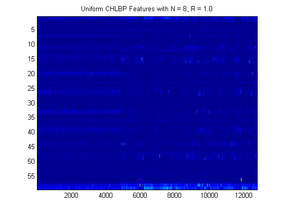 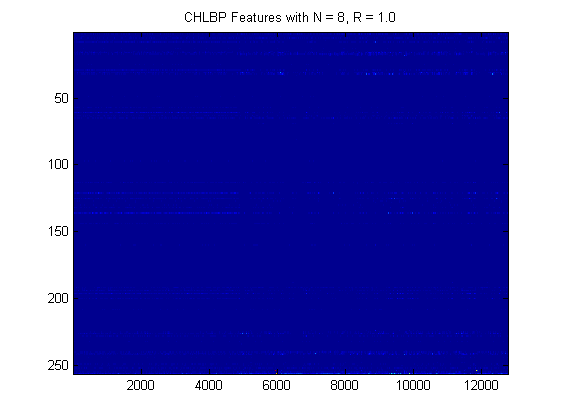 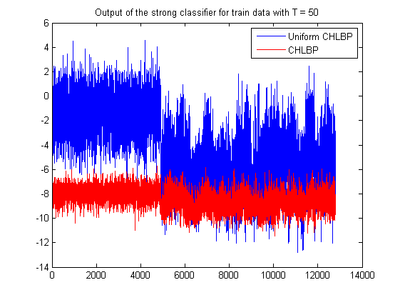 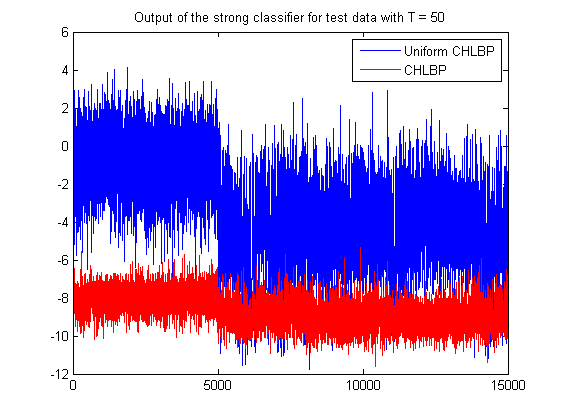 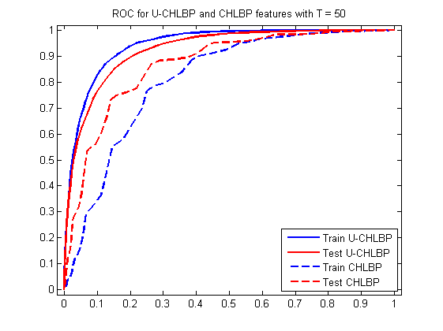